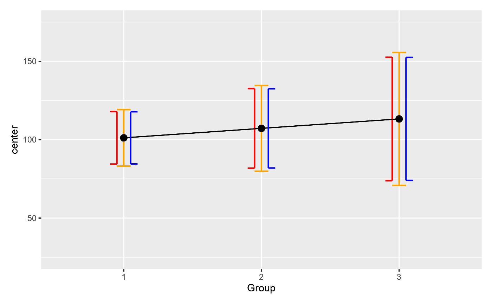

R/functionsStatistical.R
precisionMeasureWithCustomDF.RdThe following function computes a confidence interval with
custom degree of freedom. The default is to use N-1 but this number is not
quite appropriate. To get the exact critical value which is used to construct
the confidence interval, it is necessary to ``pool'' the degrees of freedom.
This last expression means that the degree of freedom is the total number of
data minus 1 for each condition except the last, and minus 1 for each participant
except the last. In formula, if the number of repeated measures is $p$,
the number of participants is $n$, and the total sample size is $N$ (with
$N = p x n$, then the
pooled degree of freedom is $(p-1) x (n-1)$ or equivalently $N -p-n+1$.
Another example where custom degree of freedom can be used is when there are
heterogeneous variances,
the confidence interval of the mean should mirror a Welsh test where the
degrees of freedom are altered based on variances. The function CIwithDF.mean()
accept any arbitrary defined degree of freedom (df).
The df must be combined to the argument `gamma` after the confidence level.
CIwithDF.mean(x, gamma = 0.95 )a vector of numbers, the sample data (mandatory);
a vector containing first a confidence level for CI (default 0.95) and
a custom degree of freedom (when unspecified, it uses n-1 where n is the number
of observations in each of the condition).
the confidence interval (CI) where the t value is based on the custom-set degree of freedom.
See the vignette "Unequal variances, Welch test, Tryon adjustment, and superb" for an example of use.
There are no references for Rd macro \insertAllCites on this help page.
# this will issue a warning as no custom degree of freedom (df) is provided
CIwithDF.mean( c(1,2,3), gamma = 0.90)
#> Warning: superb::FYI: No degree of freedom provided in gamma[2]; revert to CI.mean
#> [1] 0.3141455 3.6858545
# the confidence interval of the mean for 90% confidence level
CIwithDF.mean( c(1,2,3), gamma = c(0.90, 1.5) ) # uses 1.5 as df instead of 2.
#> [1] -0.1391871 4.1391871
# ====================================================
# A COMPLETE EXAMPLE:
# ====================================================
# Let's generate random measurements with GRD:
# (we generate a very small group of 10 to have a chance to see differences)
dta <- GRD( WSFactors = "Moment (3)", SubjectsPerGroup = 10)
# We need ggplotGrop
library(ggplot2)
# First, a regular plot
plt1 <- superb(
cbind(DV.1,DV.2,DV.3) ~ .,
dta,
WSFactors = "Moment(3)",
plotLayout = "line",
adjustments = list (purpose="difference",decorrelation="CM"),
errorbar = "CI",
gamma = 0.95,
errorbarParams = list(color="orange", width= 0.1, direction = "both",
position = position_nudge(-0.0) )
)
# Second, a plot where the df are set to the default
plt2 <- superb(
cbind(DV.1,DV.2,DV.3) ~ .,
dta,
WSFactors = "Moment(3)",
plotLayout = "line",
adjustments = list (purpose="difference",decorrelation="CM"),
errorbar = "CIwithDF", # NEW: change the CI computation
gamma = c(0.95, 10-1), # NEW: specify explicitely the unpooled df
errorbarParams = list(color="red", width= 0.1, direction = "left",
position = position_nudge(-0.05) )
)
# Third, a plot where the pooled df are explicitely set
plt3 <- superb(
cbind(DV.1,DV.2,DV.3) ~ .,
dta,
WSFactors = "Moment(3)",
plotLayout = "line",
adjustments = list (purpose="difference",decorrelation="CM"),
errorbar = "CIwithDF", # NEW: again, change the CI computation
gamma = c(0.95, 30-3-10+1), # NEW: this time, specify the pooled df
errorbarParams = list(color="blue", width= 0.1, direction = "right",
position = position_nudge(+0.05) )
)
# Convert the plots into grapphical objects all with the same scale...
plt1b <- ggplotGrob(plt1 + ylim(-1.65,1.65) )
plt2b <- ggplotGrob(plt2 + ylim(-1.65,1.65) + makeTransparent() )
plt3b <- ggplotGrob(plt3 + ylim(-1.65,1.65) + makeTransparent() )
# ... and superimpose these grobs onto an empty ggplot
ggplot() +
annotation_custom(grob=plt1b) +
annotation_custom(grob=plt2b) +
annotation_custom(grob=plt3b)
# As seen and as expected, the orange and red bars are identical;
# The blue bars, based on the (correct) pooled degree of freedom
# are just a little bit smaller because the pooled df are larger.
# However, the difference is visible only because the group size
# is ridiculously small (10 participants only).
# ====================================================
# AN EXAMPLE with heterogeneous variance
# ====================================================
# We create simulated scores with a large amount of heterogeneity
dta <- GRD(
BSFactors = "Group(3)",
SubjectsPerGroup = 10,
Population = list(
mean = 100, # will set GM to 100
stddev = 15, # will set STDDEV to 15
scores = "rnorm(1, mean = GM, sd = STDDEV*Group)"
)
)
# This computes the Welch's degree of freedom
wdf <- WelchDegreeOfFreedom(dta, "DV", "Group" )
wdf # should be between n-1 and N-n-p+1.
#> [1] 17.56551
# A regular plot
plt1 <- superb(
DV ~ Group,
dta,
plotLayout = "line",
adjustments = list (purpose="difference"),
errorbar = "CI",
gamma = 0.95,
errorbarParams = list(color="orange", width= 0.1, direction = "both",
position = position_nudge(-0.0) )
)
# Second, a plot where the df are set to the pooled df
plt2 <- superb(
DV ~ Group,
dta,
plotLayout = "line",
adjustments = list (purpose="difference"),
errorbar = "CIwithDF", # NEW: change the CI computation
gamma = c(0.95, 30-10-3+1), # NEW: specify explicitely the unpooled df
errorbarParams = list(color="red", width= 0.1, direction = "left",
position = position_nudge(-0.05) )
)
# Third, a plot where the pooled df are explicitely set
plt3 <- superb(
DV ~ Group,
dta,
plotLayout = "line",
adjustments = list (purpose="difference"),
errorbar = "CIwithDF", # NEW: again, change the CI computation
gamma = c(0.95, wdf), # NEW: this time, specify the pooled df
errorbarParams = list(color="blue", width= 0.1, direction = "right",
position = position_nudge(+0.05) )
)
# Convert the plots into grapphical objects all with the same scale...
plt1b <- ggplotGrob(plt1 + ylim(25,175) )
plt2b <- ggplotGrob(plt2 + ylim(25,175) + makeTransparent() )
plt3b <- ggplotGrob(plt3 + ylim(25,175) + makeTransparent() )
# ... and superimpose these grobs onto an empty ggplot
ggplot() +
annotation_custom(grob=plt1b) +
annotation_custom(grob=plt2b) +
annotation_custom(grob=plt3b)

# As seen, the Welch's corrected df results in error bars (blue) which are
# just a little bit longer than the pooled df bars (red). In all cases, the
# unadjusted (default) error bars (n-1) are longer (orange bars), resulting in a more
# conservative representation of the data.